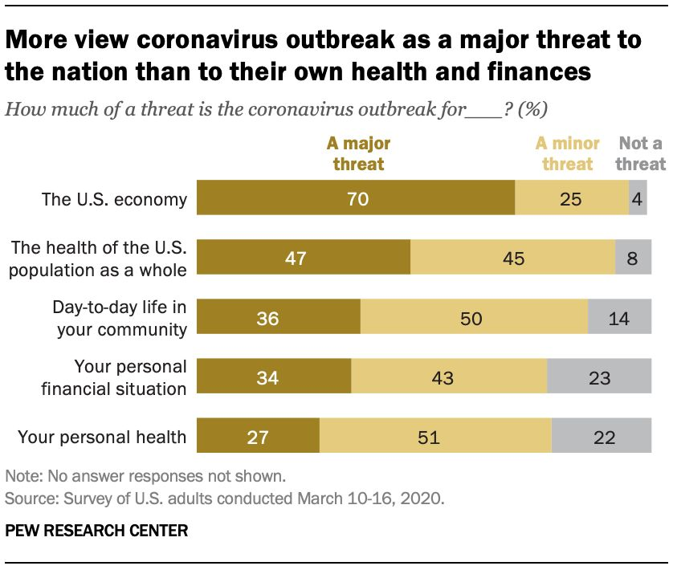

感染新冠病毒的宠物狗双检阴性后回家，两天后死亡
原文链接 备份链接 作者：张丽媛 来源：环球网 “ 香港渔护署从有关畜养人得悉，该只狗已于16日离世。畜养人表示不愿意为狗进行验尸确定死因。 ” 香港新冠肺炎确诊者周巧儿的宠物狗低程度感染新冠病毒后，香港渔农自然护理署（渔护署）日前证实， …

3 月 20 日，帝国理工学院发布了第十份新冠病毒报告，题目是《一项于 3 月 17 日到 18 日开展的人口调查：公众对英国政府关于新冠病毒建议的反应》。
报告称，自 3 月 16 日英国政府提出新的建议后，英国人中有 83% 洗手更频繁了，但只有 50% 的人会远离拥挤的场所以避免社交活动。
报告负责人、伦敦帝国理工学院公共卫生学教授海伦 · 沃德 (Helen Ward) 说，报告显示，大多数英国人听从了政府关于洗手的建议，并表示在有需要时会进行自我隔离，但人们对社交疏离缺乏信心，采取这些措施的人也少了很多。
调查是帝国理工学院患者体验研究中心委托知名民意调查机构 YouGov 进行的，后者于 3 月 17 日和 18 日调查了 2108 名英国成年人。
报告有哪些发现

调查的主要结果如下：
77% 的英国人担忧新冠疫情会在英国暴发，其中女性（83％）比男性（71％）更加担心；
在未感染的人群中，有 48% 认为自己将会被感染。其中 65 岁以上人群有 23% 持如此看法，18 岁到 54 岁的人群持此看法的有 61%；57％的人认为感染会是中度的，14% 的人认为需要住院，5% 的人担心会致命，19% 的人认为症状轻微或无症状。
 图 | 采取措施来保护自己和保护他人的比例，83% 的人洗手更频繁，52% 的人远离拥挤场所。（来源：帝国理工学院）
图 | 采取措施来保护自己和保护他人的比例，83% 的人洗手更频繁，52% 的人远离拥挤场所。（来源：帝国理工学院）
93% 的成年人报告说自己采取了如下至少一种措施来避免被感染：83% 的人洗手更频繁，52% 的人远离拥挤场所，50% 的人避免社交活动，36% 的人不再使用公共交通工具，31% 的人避免外出，11% 的人不再去办公室，28% 的人不再出国旅行。
88% 的人表示，如果医务人员建议其自我隔离 7 天（这是英国政府 3 月 16 日之前的建议），他们有意愿和有能力做到。
44% 的人会在家办公。精英群体中 60% 可以在家办公，而体力劳动者以及一些弱势群体中这一比例只有 19%。
71% 的人群表示受政府建议影响，行为已经改变。但 18 岁到 24 岁的年轻人群中这一比例只有 53%。
洗手（63%）、远离出现症状者（61%）和打喷嚏遮挡（53%）被认为是更有效的措施，而社交疏离的措施认可度更弱，避免外出为 31％，不去办公室为 23％，不去商场 16%，以及休学为 19%。
需要担心的问题
3 月 16 日，英国政府宣布了抗疫的新举措，包括停止与他人非必要的社交接触，停止非必要的旅行，尽可能居家办公，远离酒吧、俱乐部、剧院等场所，如果家庭有成员发烧或新发持续咳嗽就居家隔离 14 天。
海伦 · 沃德表示，若要遏止疫情发展，需要人们更多保持社交疏离。此外，那些无法在家办公的群体往往家庭收入低，储蓄少，有必要确保他们的权益不会受到损害。
帝国大学公共卫生学院首席临床学术研究员克里斯蒂娜 · 阿奇森（Christina Atchison）说，虽然大多数人表示在出现新冠肺炎症状时能够去自我隔离，但只有三分之一的人群担心自我隔离产生的心理问题，而该问题对于弱势群体尤为重要。
帝国理工大学公共卫生学院院士利 · 鲍曼（Leigh Bowman）称，低阶层的社会人群是无法在家办公的，那么如果他们有了症状，很可能面临两难选择，甚至坚持去上班，这就会给周围人群带来风险。
利 · 鲍曼呼吁政府，不管其社会地位如何，都要给劳动力市场以支持。
此外，利 · 鲍曼表示，对于年轻人群体，他们可能不太担心新冠病毒，或者公共卫生信息没有传达给他们。
英国政府已经有所行动。据 3 月 20 日 BBC 报道，如果雇主不解雇员工，政府将支付其工资 80% 的补助金，最高可达 2500 英镑。这项措施至少持续 3 个月，并视情况来决定是否延续。
27% 的美国人担心个人健康
图 | 只有 27% 的人认为新冠病毒对其个人健康构成主要威胁，22% 的人认为不会构成威胁。（来源：皮尤公司）
3 月 18 日，美国知名民调机构皮尤公司发布报告称，47% 的人认为新冠病毒对所有美国人的健康构成重大威胁。其中只有 27% 的人认为新冠病毒对其个人健康构成主要威胁，22% 的人认为不会构成威胁。
作为对比，美国人的这两项数字都比英国人要低不少，反映了美国人对于新冠疫情的重视程度要比英国人低。
美国各个人群对新冠病毒威胁的认识差异很大。老年人、黑人和西班牙裔以及没有读过大学的人更担心新冠病毒的个人健康威胁。65 岁以上人群中有 86% 的人担心这个威胁，黑人群体和西班牙裔群体中这个比例分别为 46% 和 39%，没有读过大学的人有 35% 担心该威胁。
这项调查于 3 月 10 日到 16 日进行，是针对全国范围内 8914 名成年人进行的。结果发现，大多数公众对美国疾控中心（83%）和各级政府（73%）的应对充满信心。
但只有不到一半的公众对美国总统特朗普（45%）和副总统彭斯（48%）表示有信心，52% 的人认为特朗普没有足够重视新冠病毒疫情暴发的风险。
如果不能去办公室上班，有 36% 的美国人称可以继续领到工资，21% 的人表示即使中止上班 2 周甚至更长时间没有收入的话，仍然可以负担基本支出，但有三分之一的人表示如果没有收入将很难度日。在年收入少于 5 万美元的家庭，有 49% 将艰难度日。
-End-
参考文献
https://www.imperial.ac.uk/news/196353/most-washing-hands-only-half-social/

原文链接 备份链接 作者：张丽媛 来源：环球网 “ 香港渔护署从有关畜养人得悉，该只狗已于16日离世。畜养人表示不愿意为狗进行验尸确定死因。 ” 香港新冠肺炎确诊者周巧儿的宠物狗低程度感染新冠病毒后，香港渔农自然护理署（渔护署）日前证实， …
原文链接 备份链接 病毒可能长期存在，那疫苗准备好了吗？中国疫苗行业协会数据显示，目前国内共有18个单位在研制新冠病毒疫苗，最快的疫苗将于4月下旬左右申报临床试验。而国外也已至少有6个国家的10余家医药公司宣布正在研发疫苗。 未经授权 禁 …
原文链接 备份链接 图片来源：图虫 “ 黄燕玲表示，她本人在成都生活的好好的，造谣者是加拿大华裔。 ” 2020年2月16日中午，针对网上热议的“武汉病毒所一研究生系零号病人”的信息，中国科学院武汉病毒研究所在其官网发布公告称，网传信息不 …
原文链接 备份链接 记者/ 张蕊实习记者林亦桥 编辑/石爱华 宋建华 在进行核酸检测的工作人员 新冠疫情后期，“治愈后再次复阳”、“连续数次检测为阴，最后被确诊”、“无症状感染”的病例报告开始越来越多地出现，一度让新冠被称为“最狡猾的病 …
原文链接 备份链接 人们意识到，即便身体“刚刚”的，如果防护意识和措施不到位，也难逃病毒的魔掌，这也许能让更多的民众正视疫情带来的威胁。 文 | 阿 晖 随着新冠肺炎疫情在全球的蔓延，向来以身体素质相比普通人更强而著称的体育界，也被疫情席 …